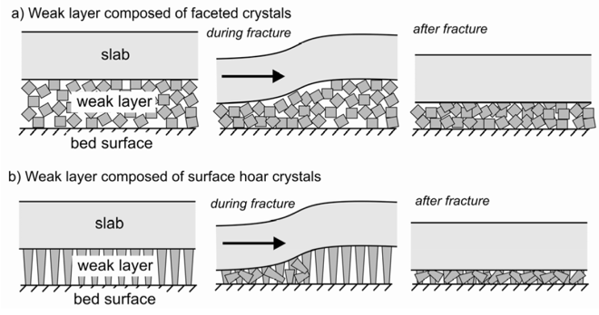

Know the difference between persistent and non-persistant weak layers
Understand the conditions that promote persistence of weak layers.
Overview of Lesson
For a slab avalanche to occur, a weak layer that prevents the slab from bonding to the bed surface is required. It is in this layer that shear (and perhaps compression) fractures occur and propagate. The Avalanche Handbook distinguishes between weak layers (the Avalanche Handbook refers to these as “non-persistent” weak layers) and persistent weak layers.

Non-persistent Weak Layers
Non-persistent weak layers consist of snow grains that (while creating a weak layer after forming) strengthen quickly and bond to the slab and bed surface readily. These weak layers commonly consist of new snow grains, decomposing and fragmented grains, rounds, and perhaps wet grains. These types of grains metamorphose readily into stronger forms that bond well to each other and surrounding layers. Generally speaking, non-persistent weak layers will show observable strength gain and improvement in bonding in a matter of hours or days.
If a weak layer is related to new or recent snow (new snow or DF grains), note the depth of the fracture lines and watch the trend of avalanche activity. If avalanches are running in the layer of storm snow and activity tapers off in the first 24 - 36 hours after the storm ends, instability is almost certainly related to a non-persistent weak layer and stability will likely improve dramatically by the time 48 hours has elapsed.
If a weak layer is related to wet grains, watch (measure) air and snow temperatures above and below the wet layer. As air and snow temperatures fall to well below freezing, the problem will likely resolve itself quickly as the wet grains freeze. A wet layer may persist if temperatures are very warm and the grains do not freeze on an interface between grain types, as exemplified by density changes in storm snow.
Persistent Weak Layers
Persistent weak layers strengthen slowly (or continue to weaken) and do not bond readily to the bed surface or slab. Persistent weak layers usually consist of facets, either near-surface facets, depth hoar, or surface hoar. These grains do not metamorphose readily into stronger forms and do not bond well to each other or adjacent layers. Persistent weak layers may get weaker over time-even when strengthening persistent weak layers take many days, weeks, and sometimes months to show significant increases in strength or improvement in bonding. Persistent grain types forming above or below stiff layers and crusts can be durable and last for weeks, months, or seen throughout the season in a mountian snowpack.
Persistent weak layers are often associated with mountain climates where extended periods of cold, dry weather are common, and where there are fewer precipitation events and accumulations are moderate or light.
Persistent weak layers are much harder to assess and forecast. Avalanches associated with these layers may occur sporadically when the layer first forms. Sometimes no avalanches occur until some time after the layer has formed and some combination of seemingly minor evens triggers failure. Persistent weak layers are difficult to assess as they may go through cycles where strength decreases, increases, and then decreases again. In conjunction with these strength fluctuations, persistent weak layers often go into extended dormant periods before becoming sensitive to triggering.
Persistent weak layers require ongoing, long-term monitoring using a variety of observation, testing, and recording methods to ensure one does not lose track of their locations and characteristics (observation and testing methods are discussed later when we talk about observing and recording instability factors). Typically, persistent weak layers also call for a more conservative approach to terrain selection and hazard forecasting.